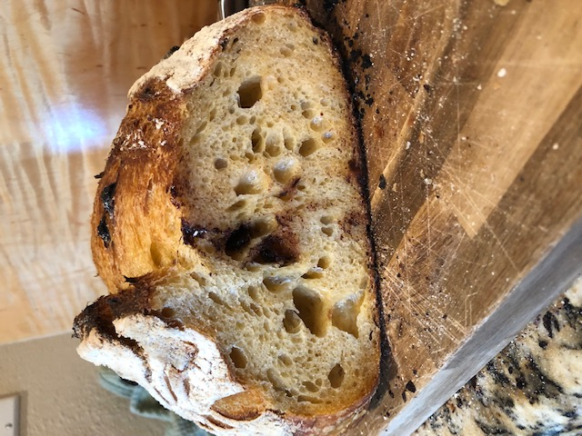

Pumpkin Chocolate Sourdough

Description
This pumpkin chocolate sourdough recipe is sweet and tasty and perfect for the autumn season!
Ingredients
- 720g Flour
- 323g Water
- 293g Liquid Levain
- 218g Pumpkin Filling
- 150g Chocolate Chips
- 18g Salt
- 1.5g Diastatic Malt Powder
Steps
- Measure 323g of room temp water into a large bowl.
- Add 218g Pumpkin Filling. Stir to combine
- Add 293g of liquid levain. Stir to combine.
- Add 720g of flour and 1.5g of diastatic malt powder. Mix just until all is incorporated.
- Sprinkle 18g salt on top. Let rest for 30 minutes.
- Knead dough just until combined. Let rest for 1 hour.
- Add 150g chocolate chips. Fold dough 6 times at 30 minute intervals.
- Let dough rest for 30 minutes after the 6th fold.
- Shape dough, place into a floured banneton, put inside plastic bag, and leave in the fridge for 12-16 hours.
- Preheat oven to 470 degrees.
- Score dough, and bake while covered for 50 minutes. Remove cover and bake for an additional 5 minutes. Crack oven and bake for a final 5 minutes.
- Remove from oven and let cool.
- Enjoy!